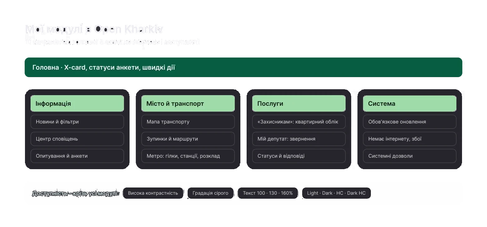
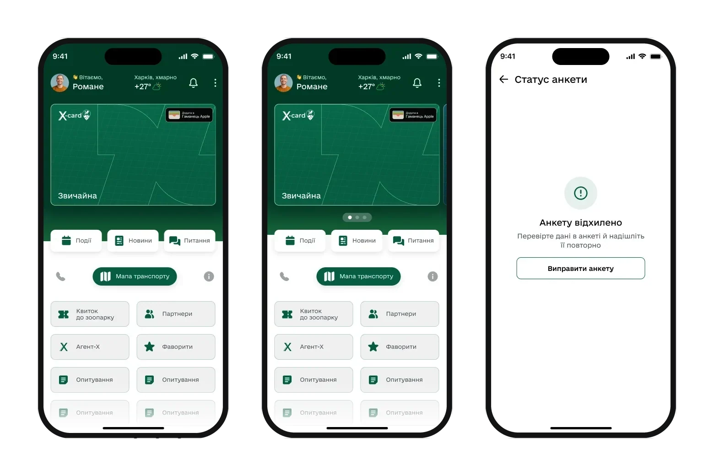
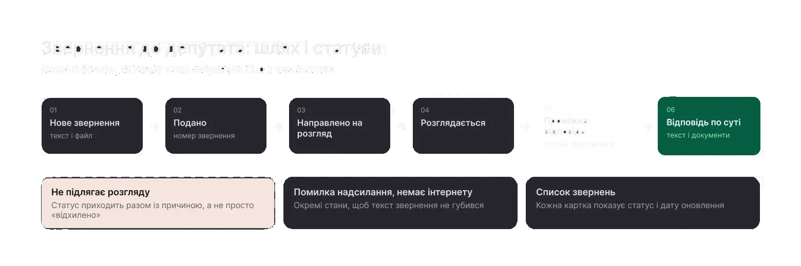
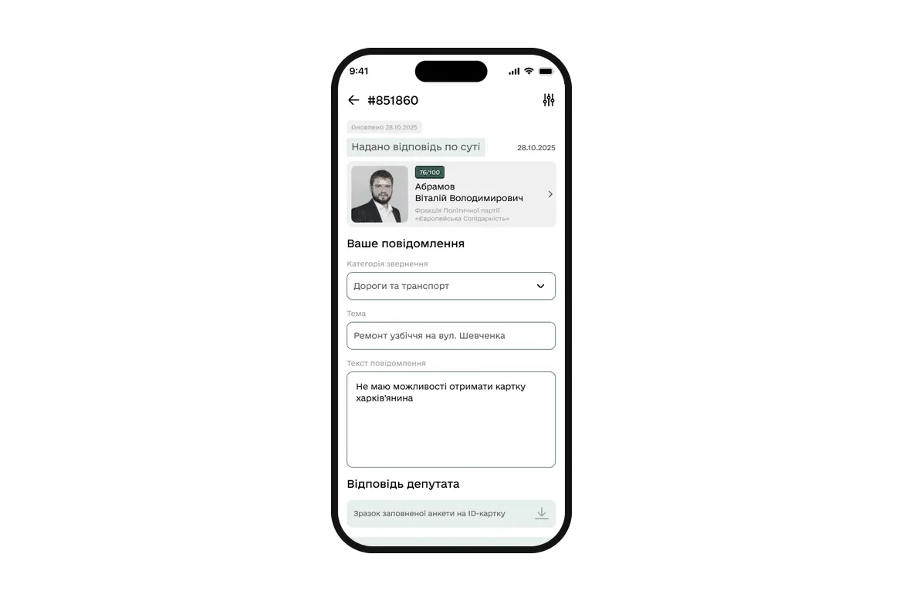
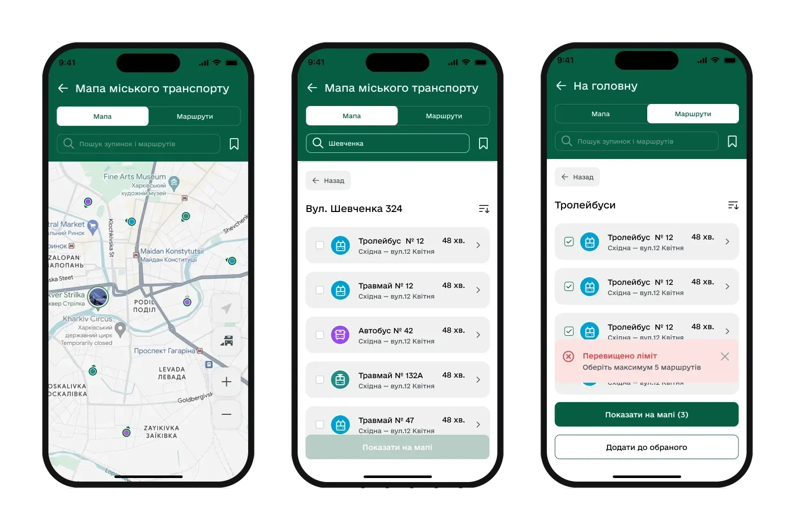
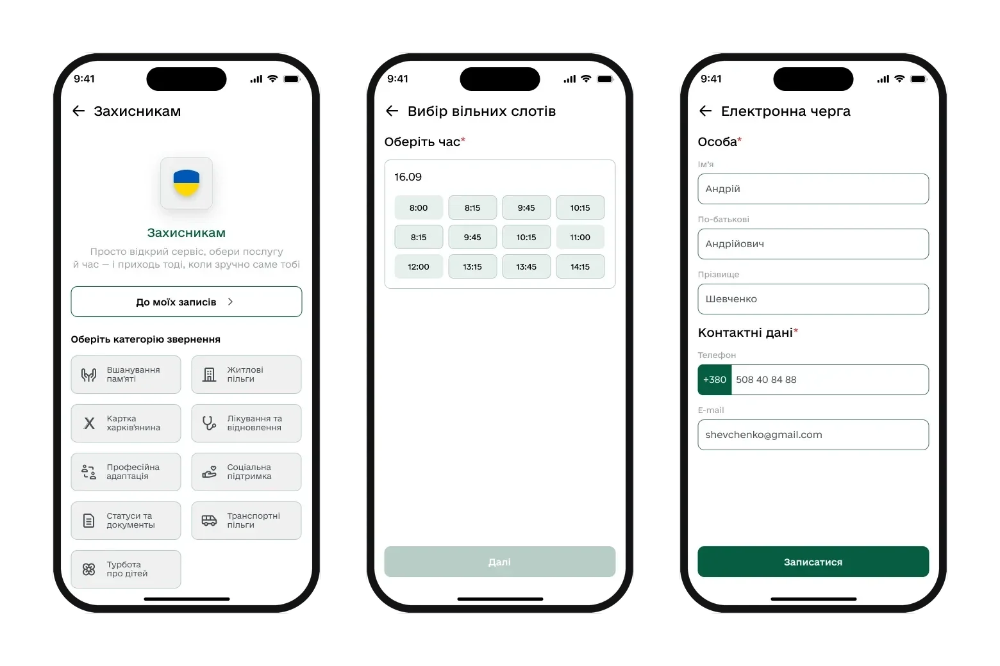
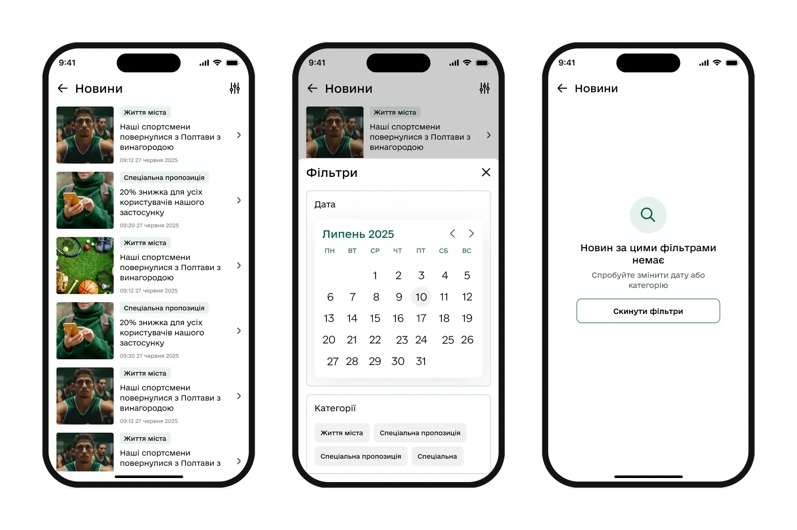
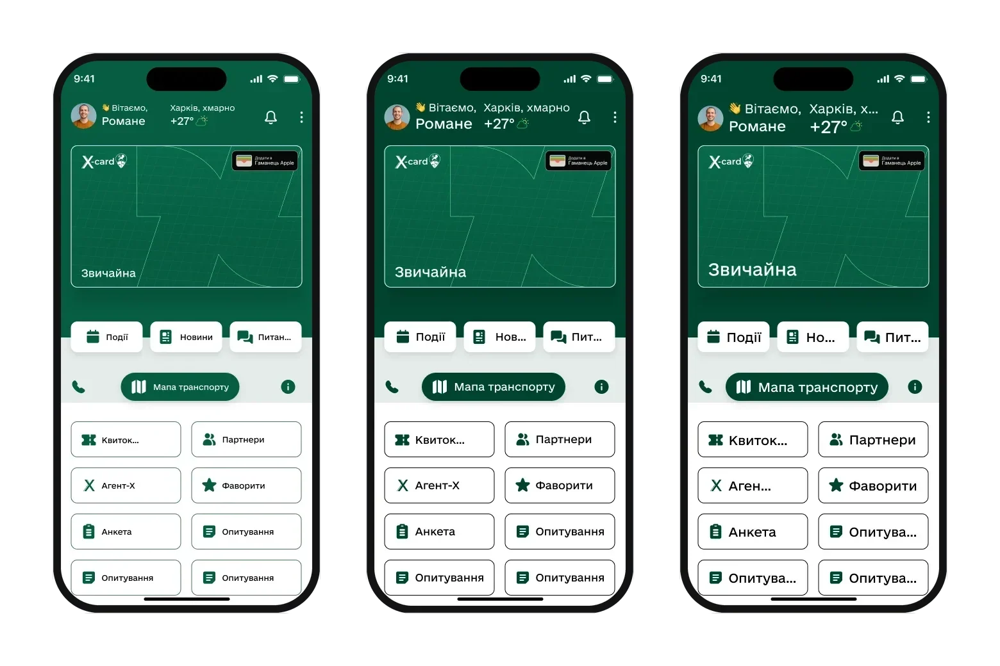
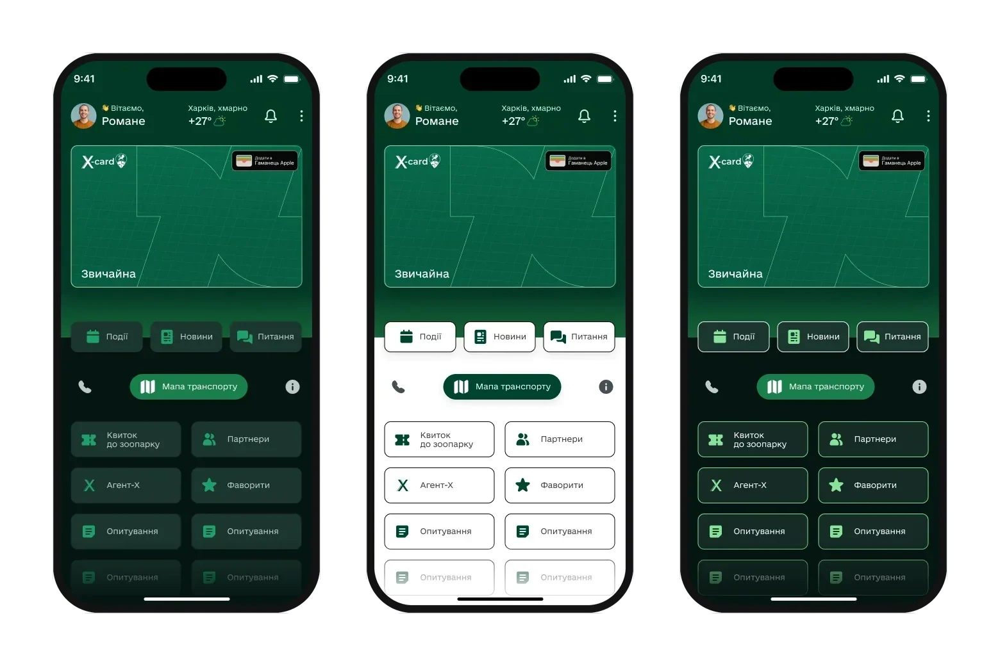

Many different city services – transport, requests, applications, news – had to become consistent within one app.
Constraints: release on August 20 together with development, no user research, and text size in accessibility modes is calculated by developers with a formula.
Roman and I ran the flows in parallel and reviewed each other’s work; the brand book, icons and animations were his. Fully mine: the UI kit and styles, accessibility, the Invincibility Points map, and the redesign of news, sign-in, surveys and the card application. We finished the first versions of maps and transport together.

Home adapts to the person’s state
- Why
- People open the app without an account, without a Kharkiv resident card, with a card, or with an application under review or rejected. One home screen can’t show everyone their next step.
- What I did
- Home changes with the state: news and “Sign in”, news, the X-card and quick actions. Application statuses explain what happened and what to do, and every step of the application has error screens.
- What I got
- Shipped to production. I don’t have usage data.
- What changed
- A rejected application is no longer a dead end: the person sees the reason and the next step.

Requests with transparent statuses
- Why
- People sent a request and didn’t understand what was happening to it, why it wasn’t being considered or where to find earlier answers.
- What I did
- Clear statuses, a reason when a request isn’t eligible, and a history of interim and final answers in the request card.
- What I got
- Shipped to production. I don’t have usage data.
- What changed
- The whole request history is in one card, together with documents and a rating of the answer.


Transport and metro
- Why
- Names and CTAs were unclear, search and timetables needed rework, and terminal stations and metro exits had no scenarios of their own.
- What I did
- New names and CTAs, search, timetable structure, scenarios for terminal stations, the metro with lines, timetables and exits, and a limit on saved routes.
- What I got
- The client approved the flows. The timetable was later reworked several times at their request; there were no tests with people.
- What changed
- The metro shows directions, weekday and weekend timetables and open exits, and the map shows accessible transport.

“For Defenders”: from paper to a mobile form
- Why
- The housing register application was filed on paper: family members, documents, data checks – all by hand.
- What I did
- A form with repeatable blocks for family members and documents, validation, a generated application, submission confirmation and statuses.
- What I got
- Shipped to production. I don’t have usage data.
- What changed
- The application is filed from a phone, and people can see its stage.

Filters on one screen, text you can read
- Why
- Each event filter opened on its own screen, the approved design had small headings and grey text, and the client asked for narrower buttons.
- What I did
- All filters on one screen, the selected ones visible and removable with one tap. Headings 26 px, body 16 px, and buttons kept at 48 px.
- What I got
- Approved. The client accepted 48 px buttons after I backed them with standards. The effect on usage wasn’t measured.
- What changed
- The same filter screen is used in events, news and favourites.

Accessibility is part of the system, not a feature at the end: high contrast, greyscale and text at 100, 130 and 160%, with cards growing with the text. Underneath are 48 semantic tokens in four modes, so a theme or contrast mode is a mode switch, not a new set of mockups.

